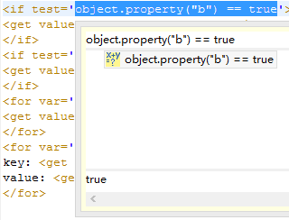
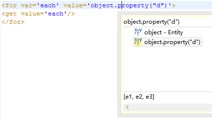
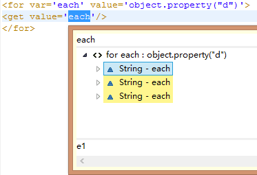

property作为entity模型的属性，其作用主要作用有2点
在模型列表中，显示了name和relation的值。
在模板中，可以通过relation得到对应的模型。
比如在界面中，我们需要一个新的title属性作为标题，就需要新增一个属性。
新增一个属性title，它的值为Book，这就是property作为自定义属性的作用。
设置属性名为title，属性值Book。
双击或者点击回车键可以进行编辑，如果不填写任何内容，值将为null（java的null）。
点击有更多的修改项。
点击可以删除。
预设： 通过预设，不需要每次都手动去添加需要的Property，在模型转换（生成）的时候就会自动添加。 如何预设新属性，请阅读以下内容：预设Property。
转换： 有些时候，我们需要从已有的属性（比如name）通过某个规则，得到新的值，赋予新的属性（比如title），就可以通过转换来得到，如何通过转换得到属性的新值，请阅读以下内容：转换Property
任务中选择模型组或者模型
模板中选择模型组或者模型组 + 模型（代码提示用）

如果选中的是模型组，则设置relation，如果选中的是模型，则不需要relation。

使用get标签直接得到这些属性。
运行结果
鼠标悬浮或者选中可以查看值。
运行结果
运行结果
小贴士：鼠标悬浮或者选中可以查看值。

运行结果
小贴士：鼠标悬浮或者选中可以查看值。


Map：使用for遍历，遍历对象可以调用它们的key和value。
e的值为：#{"key1":"value1","key2":"value2"}
运行结果
小贴士：代码提示能得到遍历对象的key和value